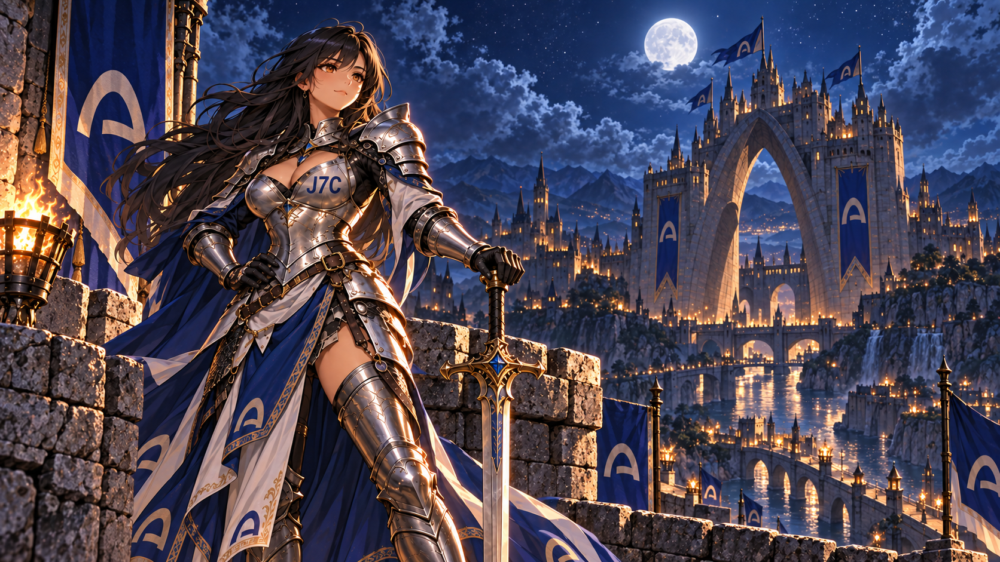

Argus milestone
6.6621%
On-chain calculation observed on 2 October 2026. Bonding latch remained false.
Inspect the calculationA silver-armored guardian, an Arc-shaped castle, and a public record that shows the work without pretending the project is bigger than it is.

J7C is small. The useful response is not louder promises; it is clearer evidence. These links separate the exact Arc token from similarly named assets elsewhere.
On-chain calculation observed on 2 October 2026. Bonding latch remained false.
Inspect the calculationThe Arc pool is recorded by its complete pool identifier, not by ticker alone.
Open GeckoTerminalAI-assisted creative and research work is disclosed. No a16z, Arc, or Circle affiliation is claimed.
Review the record“Every cycle says this time is different. The night watch says otherwise.”
Joan of ARC is a character first. She guards a castle shaped by Arc symbols while the public decides what belongs in the moat, the tower, and the next chapter.
The project borrows the visual language of venture capital for satire. It does not claim endorsement, investment, or partnership from a16z or any other organization.
Reply with a creature, relic, or problem for the castle. The strongest answer becomes part of the public lore. Holding a token is not required.